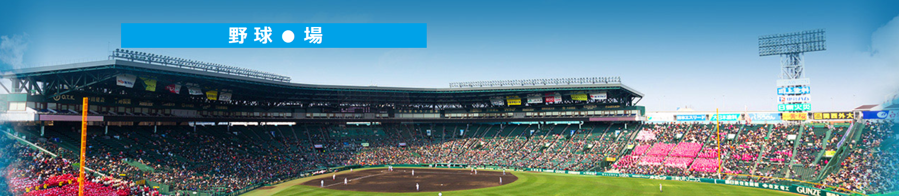
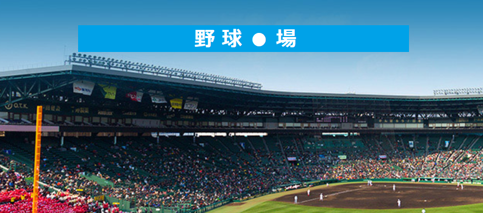

エントリー
エントリー(ガラケー用)
ルブル会場(野球〇情)
名簿
野 球 〇 場
エントリー
エントリー(ガラケー対応)
ルブル会場(野球〇場)
名簿
 
公式ルール
組み合わせ抽選後～最初の試合のプレイボールまでの間が受付です
受付期間中の手札の変更はありです
好きな高校を
8校
選んで下さい
総勝ち☆数で争います
勝ち☆数に
①～③
のオッズがあります
優勝候補の強い高校は1勝しても
①(＋☆1)
弱い高校は1勝すると
③(＋☆3)
他は1勝すると
②(＋☆2)
です
延長12回終了後
タイブレーク
突入の時点で
双方に☆ポイント追加
します、
試合後勝者は＋☆ポイント
エントリー
エントリー(ガラケー対応)
組み合わせ
組み合わせ
補足事項
今大会の公式の罰ゲームは無いです
エロ写真を賭ける等は各々で交渉して下さい
タイブレーク制について
野球のタイブレークは延長で同点の場合、規定の回から走者を置いて攻撃を始める制度で、得点が入りやすくなります
甲子園大会ではこれまで、延長十五回終了時点で同点の場合は引き分け再試合としていましたが、2018春からは決着がつくまで試合を行うようになりました
21世紀枠について
春のセンバツは夏の甲子園と違い、“21世紀枠”という政治家の闇の枠で出場するチームの存在が特徴の一つでもあります
実力重視で選ばれる出場枠ではないため、あまりのレベルの違いに、フルボッコされたり、舐められてオール控え選手出されたり、21世紀枠に負けたら末代までの恥とか言われたりします
ギャンブル的には大穴で、オッズはまず☆3です
過去の成績
過去の成績
名簿
名簿